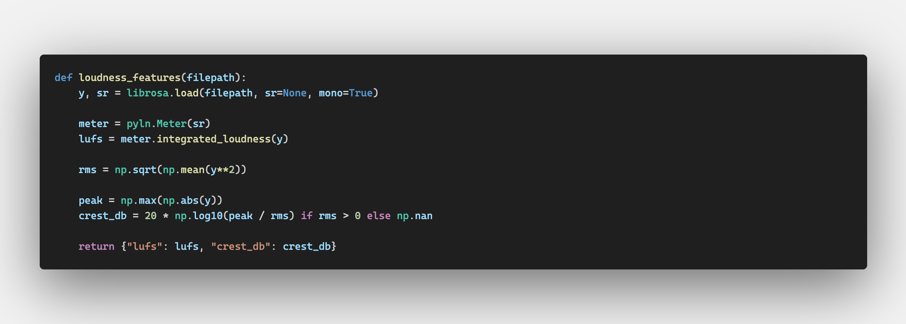
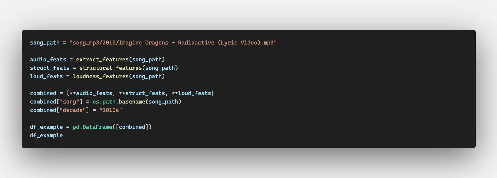
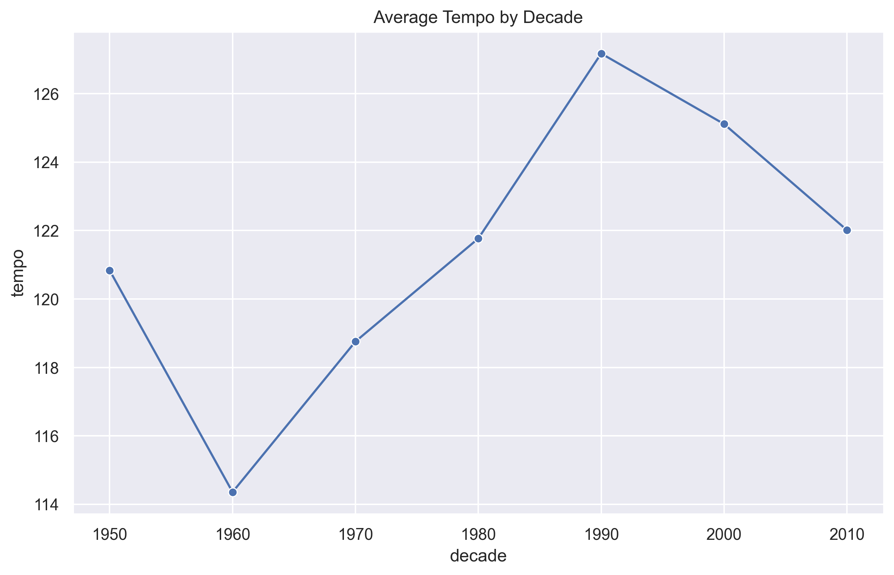
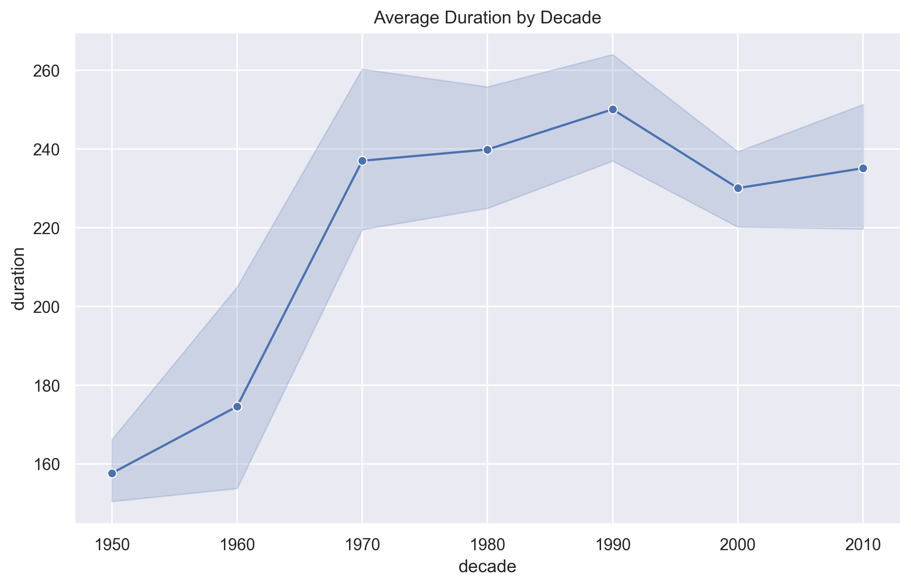
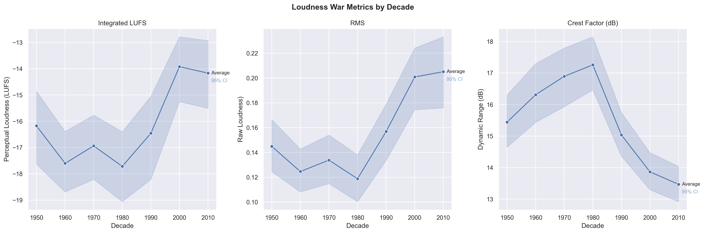
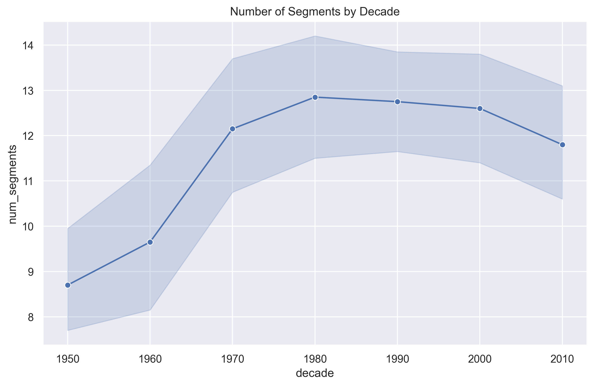
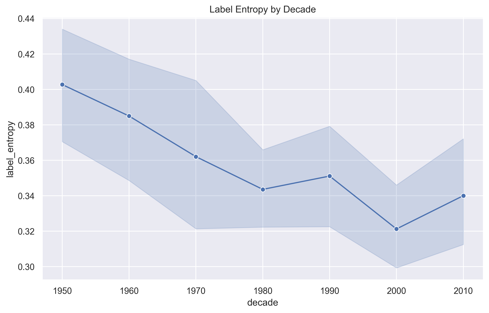

Annabelle Sole - annabellesole2026@u.northwestern.edu
Connor Olson - connorolson2026@u.northwestern.edu
CS 352 – Machine Perception of Music & Audio
Northwestern University
Professor: Bryan Pardo
Project Mentor: Annie Chu
Popular music constantly evolves, but it is often unclear how those changes manifest in measurable musical structure and sound. This project investigates how the acoustic and structural characteristics of top-charting songs have changed across decades. Understanding these shifts helps reveal whether modern hits are simply louder and more compressed, or structurally simpler across different eras. Beyond curiosity, this analysis connects to broader questions about cultural evolution, technological change, and how production techniques shape listener preferences.
At a high level, we analyzed the top twenty songs from each decade between the 1950s and 2010s using audio signal processing techniques. To find these top twenty songs we used the "Billboard Hot 100" historical dataset available on Kaggle, and then downloaded local MP3 samples of each song from YouTube for analysis. We extracted low-level acoustic features such as tempo and energy (loudness) using Librosa. We also performed structural segmentation using MSAF (Music Structure Analysis Framework) to measure properties such as number of structural sections, average segment length, repetition patterns, and structural entropy. By aggregating these features by decade, we were able to compare long-term trends in popular music.
To build and test our analysis, we constructed a dataset of canonical hit songs from each decade and processed the raw audio files directly. We used the following metric to get the "top 20" songs: # chart appearances × (101 - avg_rank). This rewarded songs with more weeks on the chart, as well as songs with average higher scores. Acoustic features were averaged per song and then averaged across decades. Structural complexity was measured using segmentation boundaries and entropy metrics. We evaluated trends by visualizing feature changes over time and examining whether shifts appeared linear, cyclical, or abrupt.
Our results suggest that while tempo fluctuates, energy and loudness have increased significantly over time, particularly from the 1990s onward. Structural entropy appears to decrease in more recent decades, suggesting increased repetition and possibly more formulaic structure in modern hits. Overall, the findings indicate that popular music evolves gradually, with technological and production changes playing a major role in shaping its acoustic and structural profile.
Visit our code repository here!
This is an example walkthrough of one song ("Radioactive" by Imagine Dragons) showing the extraction of acoustic and structural features using Librosa and MSAF, and how the resulting DataFrame is structured for further analysis.


Average tempo rises from the 1950s through the 1980s, peaks around the 1990s, and then declines slightly in the 2000s and 2010s. This suggests that modern hits are not necessarily faster than songs from earlier peak decades.

Song length expanded through the CD era, peaked in the 1990s, declined with the rise of streaming, and partially rebounded in the 2010s.

We observe a dramatic increase in RMS energy over time, especially from the 1990s onward, consistent with the “loudness war” phenomenon in modern production. Three complementary metrics capture the loudness war's fingerprint across decades. RMS measures raw loudness, LUFS (Loudness Units Full Scale) uses RMS but weighs mid-range frequencies as louder than bass or treble to more accurately represent perceived loudness. Crest factor measures the ratio between peak amplitude and RMS, which trends downward as a direct result of compression, a result of the loudness war. According to Sound on Sound, research analyzing over 4,500 tracks found that average loudness rose by roughly 5dB between the 1970s and 2011 (when the article was written), with crest factor falling by 3dB from the 1980s onward [1].

The number of structural segments per song increased from the 1950s through the 1980s, suggesting growing structural complexity during that period. In more recent decades, the number of segments slightly declines, indicating a modest simplification of song structure. The MSAF algorithm uses a similarity matrix to determine how similar certain sections of each song is to the rest of the songs, and the most different areas are the section boundaries. A low number of segments means the structure is more simple, and a high number means it's more complex.

After sectioning the song, to get label entropy, MSAF determines how evenly the song's sections are spread across different types of sections. Low entropy means the song has a similar type across the whole runtime, and high entropy means there's much variability. Segment variability measures how evenly different structural sections are distributed within a song, indicating how repetitive or structurally diverse its overall form is. Segment variability declines steadily from the 1950s through the 2000s, suggesting that modern songs tend to rely more heavily on repeated section patterns. This indicates a gradual shift toward more predictable and repetitive song structures over time. A study published in Scientific Reports found that contemporary popular music exhibits increasing homogenization and reduced dynamic variability, indicating that, as our findings suggest, modern hits have become more acoustically similar over time [2].

TODO
| Decade | Song | Artist | Peak | Appearances | Score |
|---|
Throughout the final project process we've changed our focus and goals slightly. Initially, we wanted to use the Million Song Dataset to analyze how quickly music on the top charts changes over time, going week by week to analyze different changes. We also planned on using the Billboard Python API to fetch Billboard data, which is now deprecated, leading us to pivot to Kaggle data. Upon downloading a 10,000 song subet from the MSD, we found that there was not enough overlap with the top Billboard songs for our original analysis goal. Because of these restrictions, we pivoted to manually scraping audio files from YouTube and collecting our own raw data. We ended up having a smaller sample set with more data for each, rather than a larger sample set with less data. Our preliminary analysis using the MSD is available in our MSD_test_files folder of our repository for those interested. In the future, it would be interesting to use data from the entire MSD if there is larger overlap in the full set than the subset.